ENTERPRISE PLATFORM / STATIC SHOWCASE
装备管理业务，
从工作台到全流程界面。
原站演示账号界面的离线静态存档，展示信息架构、业务工作台、数据列表、登记表单与风险预警。
从功能门户开始 ↗
12代表页面05业务场景HTML离线浏览
PAGE COLLECTION
页面展示集
点击卡片查看静态页面 · 内页可切换页面
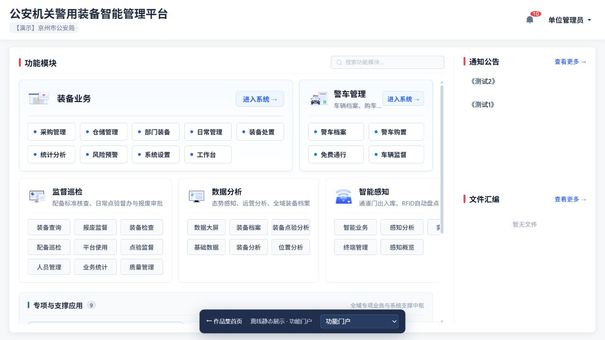
01功能门户
平台功能入口与模块架构
HTML 静态页面查看页面 ↗
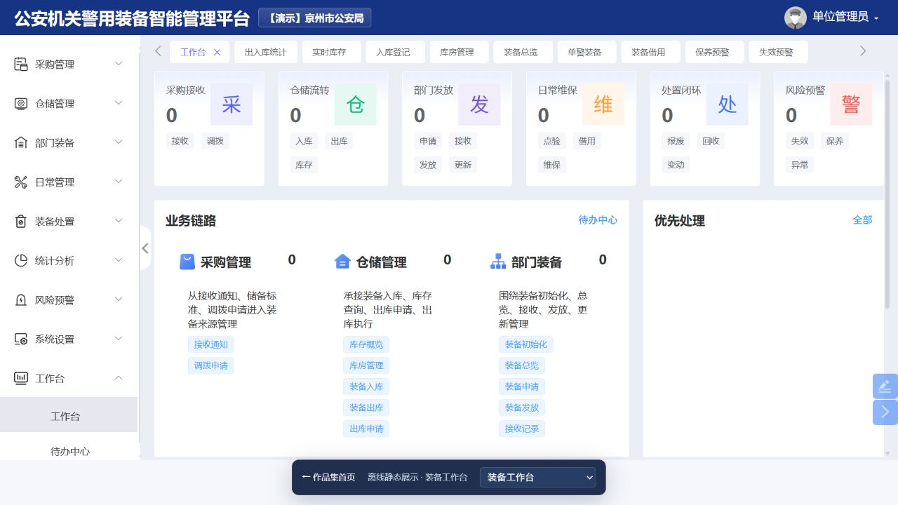
02装备工作台
采购、仓储、发放与维保业务链路
HTML 静态页面查看页面 ↗
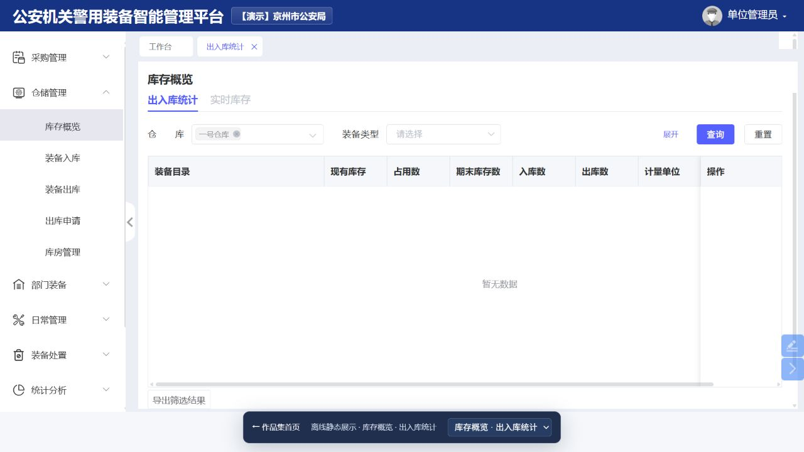
03库存概览 · 出入库统计
筛选条件与出入库统计表
HTML 静态页面查看页面 ↗
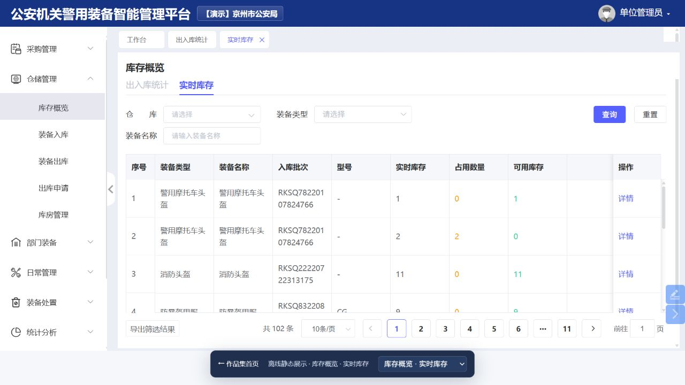
04库存概览 · 实时库存
批次、占用数量与可用库存
HTML 静态页面查看页面 ↗
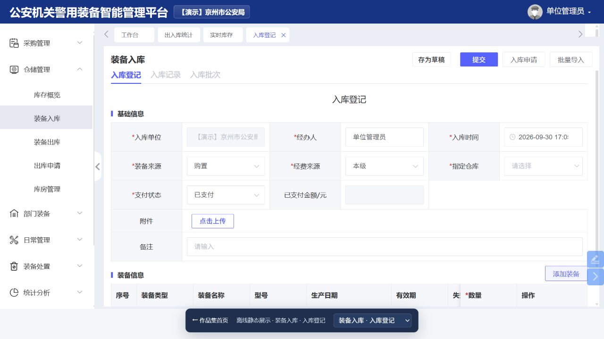
05装备入库 · 入库登记
基础信息、装备信息与附件表单
HTML 静态页面查看页面 ↗
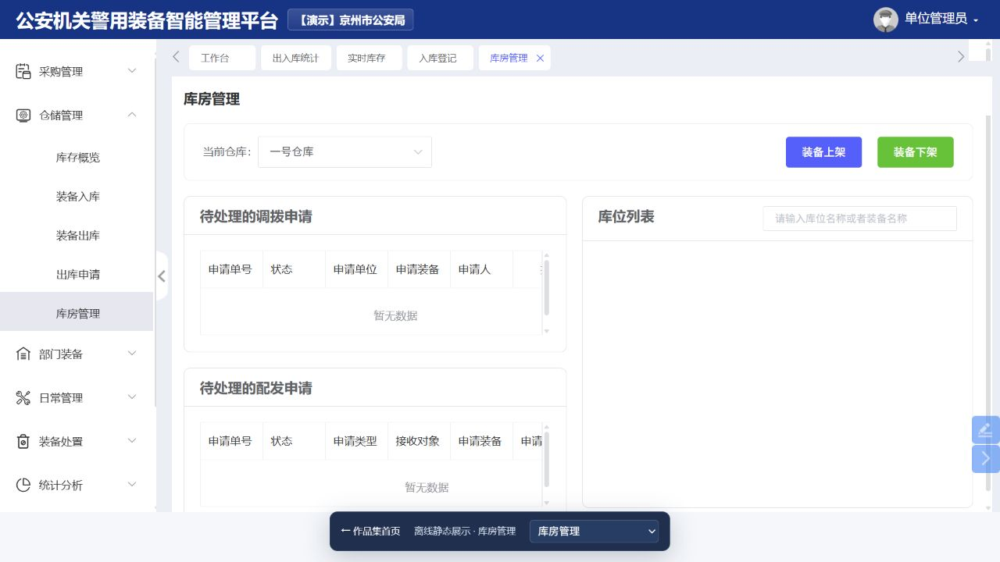
06库房管理
仓库切换、申请处理与库位列表
HTML 静态页面查看页面 ↗
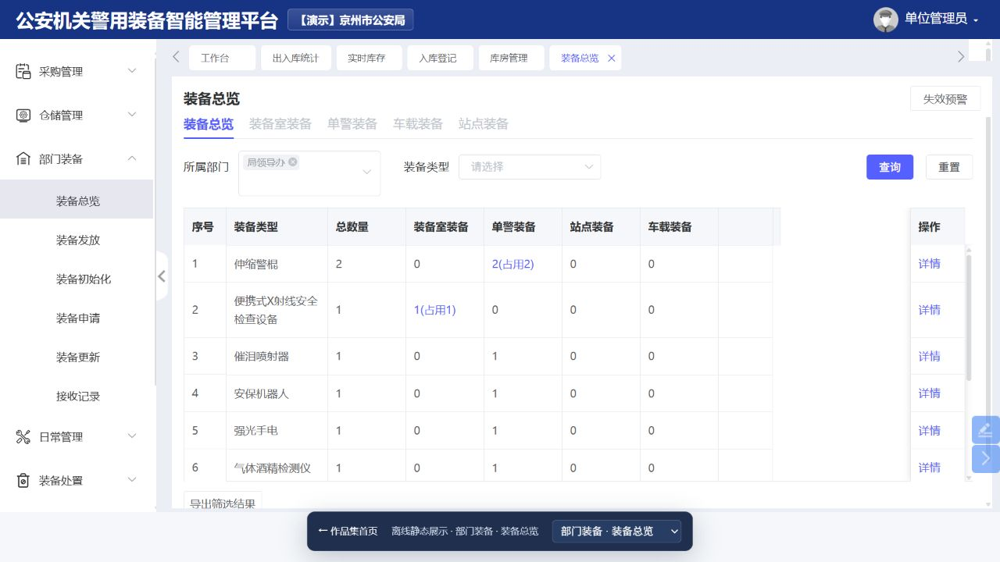
07部门装备 · 装备总览
部门装备数量及分类汇总
HTML 静态页面查看页面 ↗
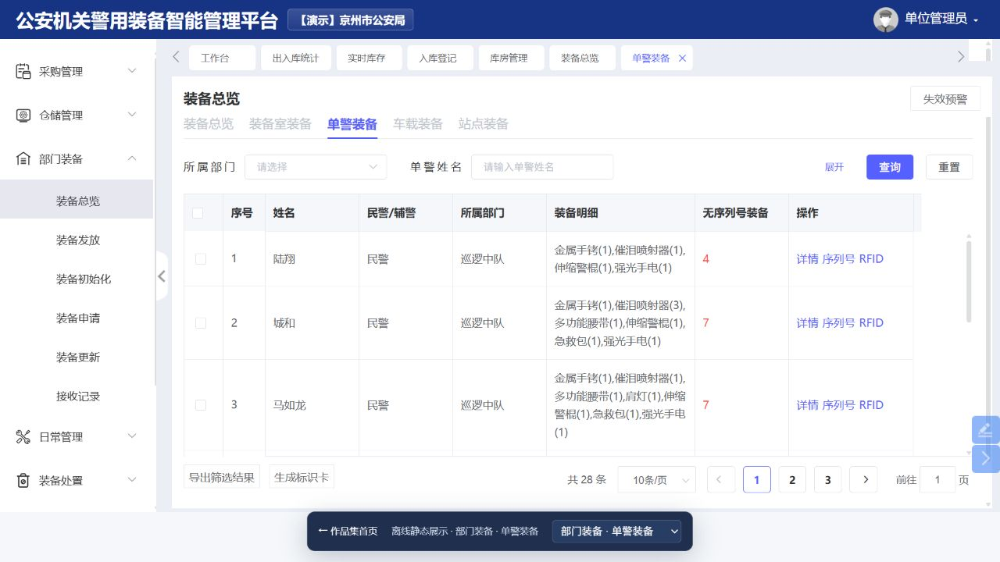
08部门装备 · 单警装备
人员、部门与配备明细
HTML 静态页面查看页面 ↗
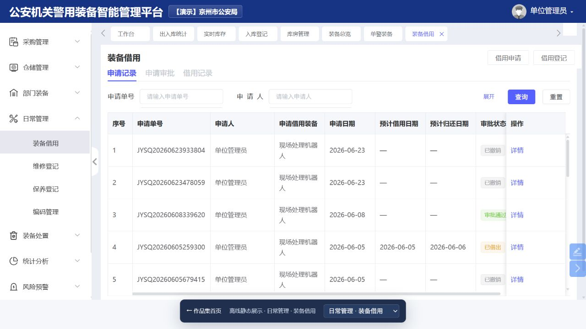
09日常管理 · 装备借用
申请记录、审批状态与借用单
HTML 静态页面查看页面 ↗
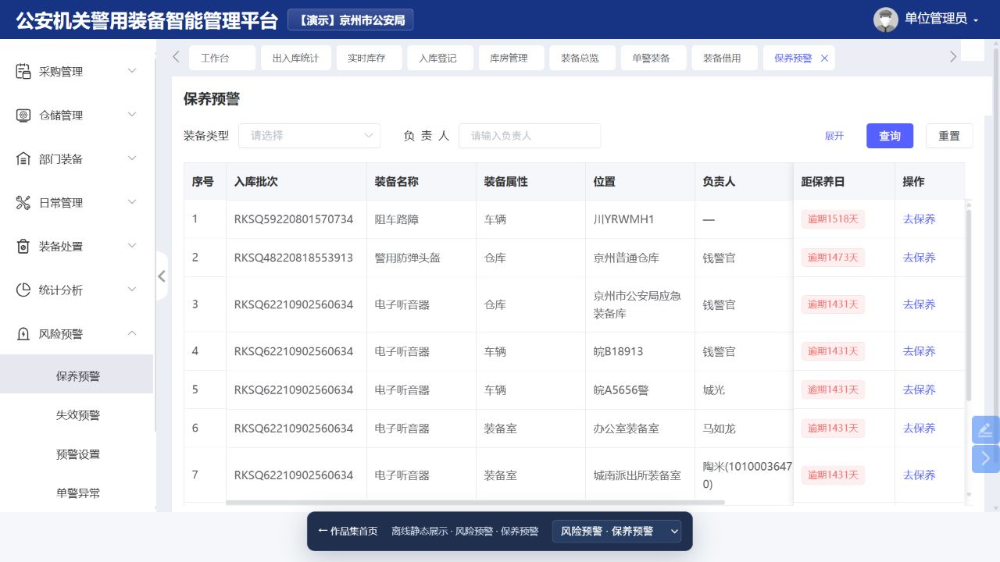
10风险预警 · 保养预警
位置、负责人及保养周期预警
HTML 静态页面查看页面 ↗
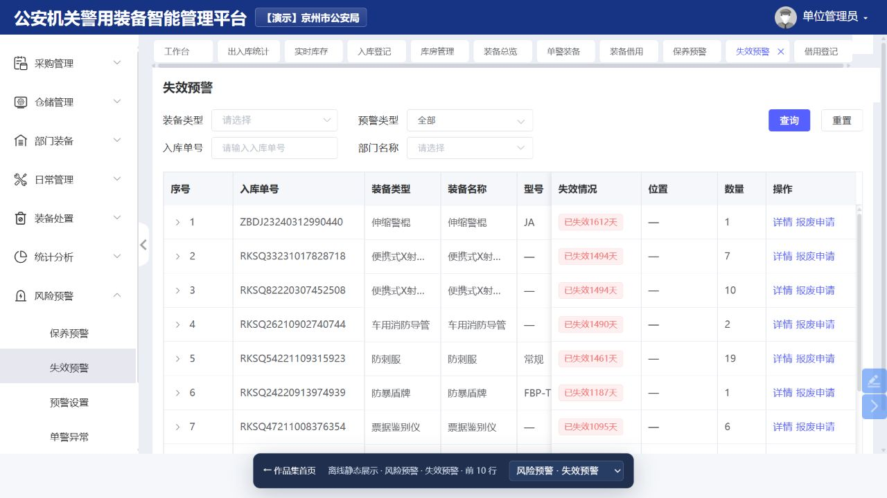
11风险预警 · 失效预警
生产日期、有效期与失效日期
HTML 静态页面查看页面 ↗
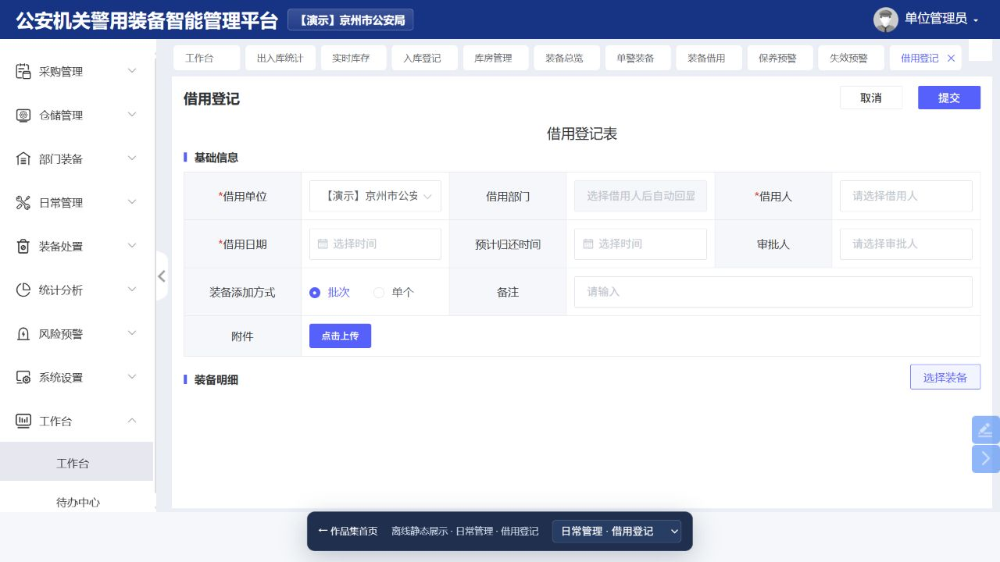
12日常管理 · 借用登记
借用信息、归还时间与装备选择
HTML 静态页面查看页面 ↗
页面采集于 2026 年 9 月 30 日，来源于“【演示】京州市公安局”账号可见界面。页面保持采集时的内容；表格保留当前页记录，失效预警展示前 10 行。查询、提交、审批、上传等后台功能仅作界面展示。账号凭据与登录会话不包含在交付文件中。